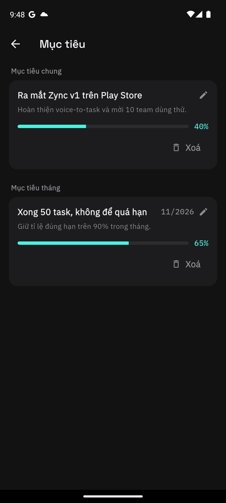
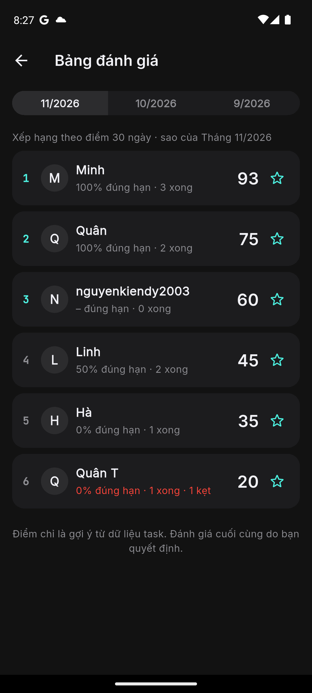
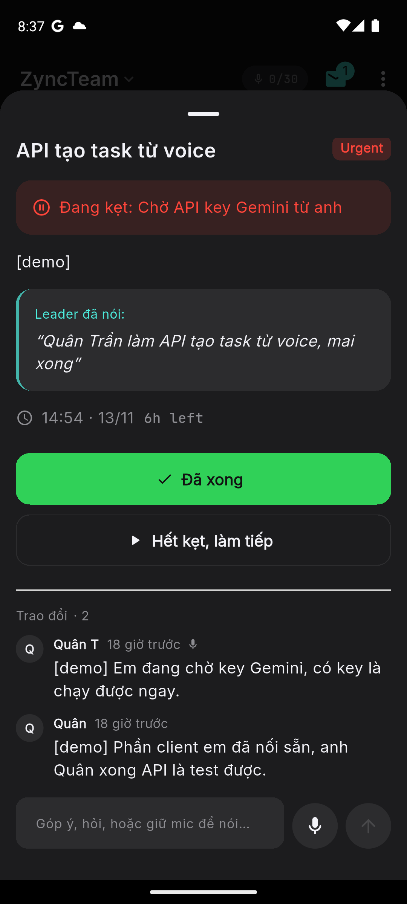

Giao việc chỉ bằng giọng nói.
Trưởng nhóm nói một câu, AI tạo task có người nhận và deadline. Thành viên vuốt một cái để cập nhật.
Nói là xong. Radar lo phần còn lại.
Ba bước, không cần gõ phím
Zync bỏ hết thao tác thừa. Việc đi từ miệng trưởng nhóm tới màn hình của đúng người.
Nói
Giữ nút micro: “Giao cho Quân fix màn login, chiều mai xong”. Nhận dạng giọng nói chạy ngay trên máy.
AI tạo task
AI bóc tách người nhận, nội dung và hạn thành một task gọn gàng. Thiếu gì bạn chỉnh trong vài giây.
Vuốt để xong
Thành viên vuốt phải là Xong, vuốt trái là Kẹt. Trưởng nhóm thấy ngay trên radar, khỏi phải hỏi.
Đủ để điều phối cả nhóm
Giao việc bằng giọng nói
Một câu nói thành một task. Không lưu file ghi âm, chỉ xử lý văn bản.
Radar cả team
Xanh là đúng tiến độ, đỏ là đang kẹt, cam là quá hạn — tất cả trong một màn.
Tiến độ & đánh giá
Theo dõi đúng hạn, hoàn thành theo 30 ngày; bảng đánh giá minh bạch.
Mục tiêu chung
Đặt mục tiêu team và mục tiêu tháng để cả nhóm đi cùng một nhịp.
Trao đổi nhanh
Comment ngay trên task bằng gõ hoặc giọng nói, nhắn riêng cho đồng nghiệp.
Riêng tư
Dữ liệu mỗi team tách biệt hoàn toàn ở tầng cơ sở dữ liệu.
Tối giản, tập trung vào việc





Nhanh mà vẫn kín đáo
Zync được thiết kế để member thấy hữu ích, không phải bị giám sát.
Nói một câu, cả team cùng một nhịp.
Zync sắp có mặt trên Google Play và App Store. Để lại dấu để biết khi phát hành.
Nhận thông báo khi ra mắt